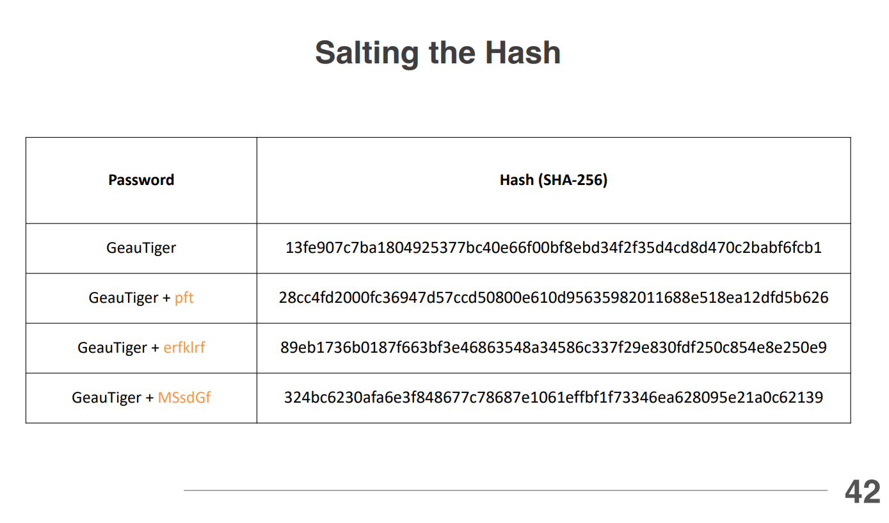
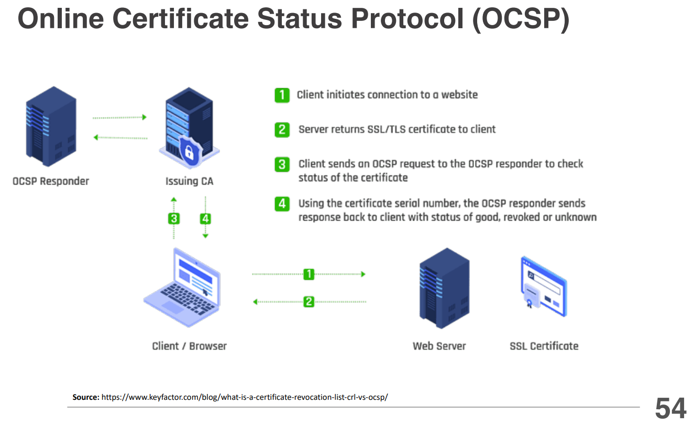

In asymmetric encryption, a key pair consists of a public key and a private key. Key generation, build both the public and priavate keys at the same time. It is based on complex mathematical algorithms that ensure the keys are mathematically related yet distinct. The security of the system relies on the mathematical relationship between the two keys, making it computationally infeasible to derive the private key from the public key. Everyone can have the public key, but only the owner has the private key.
Key escrow is a security mechanism where cryptographic keys are stored by a trusted third party, known as the escrow agent. This allows authorized entities to access encrypted data under specific circumstances, such as legal requirements or organizational policies. Key escrow can be used in various scenarios, including:
Encrypting stored data, also known as data at rest encryption, involves using cryptographic techniques to protect data that is stored on physical media, such as hard drives, solid-state drives, or cloud storage. The goal is to ensure that even if the storage medium is compromised, the data remains unreadable without the appropriate decryption key. Common methods for encrypting stored data include:
Database encryption involves using cryptographic techniques to protect sensitive data stored within a database. The goal is to ensure that even if the database is compromised, the data remains unreadable without the appropriate decryption key. Common methods for database encryption include:
Transport encryption, also known as data in transit encryption, involves using cryptographic techniques to protect data as it is transmitted over networks. The goal is to ensure that even if the data is intercepted during transmission, it remains unreadable without the appropriate decryption key. Common methods for transport encryption include:
Key length refers to the size of the cryptographic key used in encryption algorithms. It is typically measured in bits and plays a crucial role in determining the security level of the encryption. Longer keys provide stronger security, as they increase the number of possible key combinations, making it more difficult for attackers to perform brute-force attacks.
Key stretching is a technique used to enhance the security of weak or short cryptographic keys by increasing their effective length. This is typically done by applying a computationally intensive algorithm to the original key, making it more resistant to brute-force attacks.
Key exchange is the process of securely sharing cryptographic keys between parties to enable encrypted communication. The goal is to ensure that only the intended recipients can access the keys, preventing unauthorized access. Common key exchange methods include:
Encryption technology encompasses various methods and tools used to secure data through cryptographic techniques. It plays a crucial role in protecting sensitive information from unauthorized access and ensuring data integrity and confidentiality. Encryption technologies include:

Digital signatures are a way to prove that a message or document is authentic and hasn't been changed. They use a combination of hashing and asymmetric encryption to create a unique signature that can be verified by anyone with the sender's public key. The process of creating and verifying a digital signature involves several steps:
Digital certificates are electronic documents that prove the ownership of a public key. They are issued by trusted entities called Certificate Authorities (CAs) and contain information about the certificate holder, their public key, and the CA's digital signature. Digital certificates are used to establish trust in online communications, such as secure websites (HTTPS), email encryption, and code signing.
Certificate Authorities (CAs) are trusted entities that issue and manage digital certificates. They play a crucial role in establishing trust in online communications by verifying the identity of certificate requesters before issuing certificates.
Third-party Certificate Authorities (CAs) are independent organizations that issue digital certificates to individuals, organizations, and devices. They play a crucial role in establishing trust in online communications by verifying the identity of certificate requesters and ensuring the authenticity of their public keys.
A Certificate Signing Request (CSR) is a block of encoded text that is submitted to a Certificate Authority (CA) when applying for a digital certificate. The CSR contains information about the entity requesting the certificate, including their public key and other identifying details.
To create a CSR, the requester typically uses a tool or software that generates the key pair and the CSR. The private key is kept secret and secure by the requester, while the CSR is sent to the CA for processing. Once the CA verifies the information in the CSR and the requester's identity, it issues a digital certificate that includes the public key and other relevant details.
Private Certificate Authorities (CAs) are organizations or entities that operate their own CA infrastructure to issue and manage digital certificates for internal use within an organization. Private CAs are typically used in enterprise environments where there is a need for secure communication and authentication among internal systems, applications, and users.
However, private CAs also come with challenges, such as the need for proper key management, ensuring the security of the CA infrastructure, and maintaining trust within the organization. It is essential to implement robust security practices and policies to mitigate risks associated with operating a private CA.
Self-signed certificates are digital certificates that are signed by the same entity that created them, rather than being issued by a trusted Certificate Authority (CA). They are typically used for internal testing, development environments, or in situations where trust can be established without relying on an external CA.
Wildcard certificates are digital certificates that can secure multiple subdomains of a primary domain using a single certificate. They are identified by an asterisk (*) in the domain name, which represents any subdomain. For example, a wildcard certificate for *.example.com can secure subdomains such as www.example.com, mail.example.com, and blog.example.com.
Key revocation is the process of invalidating a cryptographic key before its scheduled expiration date. This is typically done when a key is compromised, lost, or no longer needed, to prevent unauthorized access to encrypted data or systems. Key revocation can be performed for both symmetric and asymmetric keys, and it is an essential aspect of key management in cryptographic systems.
The Online Certificate Status Protocol (OCSP) is a protocol used to check the revocation status of digital certificates in real-time. It provides a more efficient and timely method for verifying the validity of a certificate compared to traditional methods, such as Certificate Revocation Lists (CRLs). The OCSP process involves several steps:
